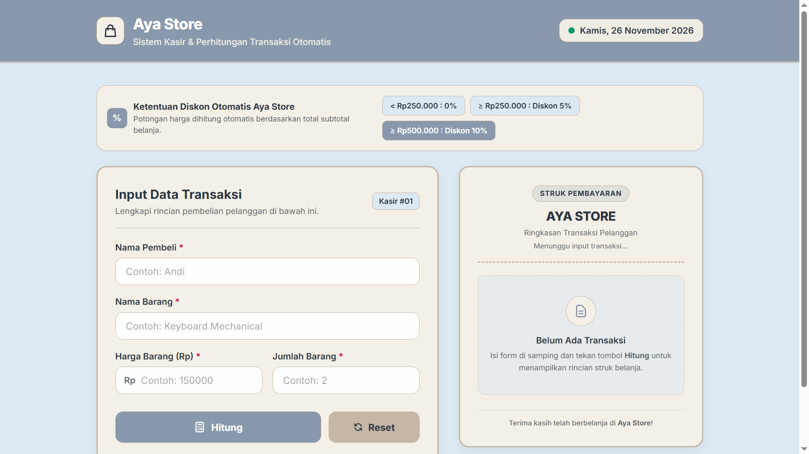

Aplikasi Transaksi
Sistem Kasir (Point of Sale)
Aplikasi kasir yang dirancang untuk mempermudah pencatatan transaksi penjualan, perhitungan total belanja secara otomatis, pengelolaan daftar barang, serta pembuatan laporan ringkas harian dengan antarmuka yang rapi dan mudah digunakan.